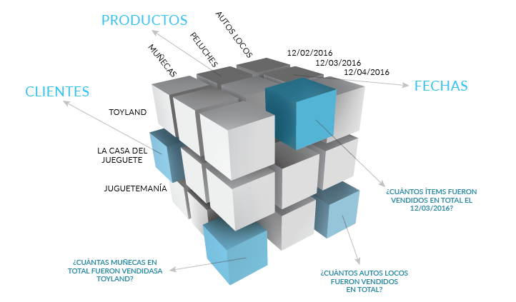
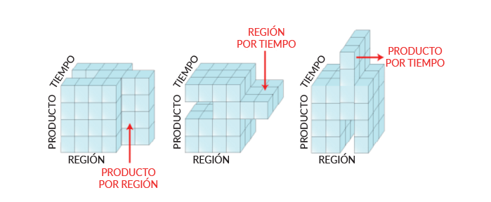

Desarrollo Base de Datos · teoría para el 2.º parcial
Introducción al Data Warehouse
Del dato a la decisión: BI, DW, data marts, OLTP y OLAP.
Basado en el PPT de la cátedra. Los recuadros “En criollo” y “Ojo en el choice” son explicación nuestra. ← → avanzar · O ver todas · T cambiar tema · L claro/oscuro · F pantalla completa
Mapa
Cinco preguntas que responde este deck
1 · El problema
¿Por qué tener muchos datos no alcanza?
2 · BI
¿Qué es Business Intelligence y qué no es?
3 · DW
¿Qué es un Data Warehouse y cómo se arma?
4 · Modelos
Inmon o Kimball, estrella o copo, DW o data mart
5 · Consulta
OLTP vs. OLAP, cubos, MOLAP / ROLAP / HOLAP
Cómo usarlo
Leé el contenido de cada slide, después el recuadro En criollo. Los recuadros Ojo en el choice marcan lo que se confunde. Al final hay una autoevaluación.
1 · El problema
Del dato a la decisión
En criollo
Un dato suelto (“37”) no dice nada. Con contexto es información (“37 ventas en marzo”). Interpretado es conocimiento (“marzo vendió menos”). Decidir qué hacer es sabiduría. La operación diaria vive abajo; el BI sube.
1 · El problema
Cada nivel de la organización usa otros sistemas
Basado en Laudon K. y Laudon J. (2004)
En criollo
Abajo, mucha gente y mucho detalle: los TPS (sistemas transaccionales) registran cada operación y son la fuente del DW. Arriba, pocas personas y poco detalle. El DW y el OLAP trabajan en el medio, para la gestión.
1 · El problema
Cada rol pide otra información
Director
Indicadores, semáforos, alertas
Pocos números, significativos
Analista
Tablas dinámicas
Análisis multidimensional
Publicar resultados
Gerente
Acceso a todos los datos
Libertad de análisis
Supervisor
Reportes predefinidos y precalculados
Acceso con restricciones de seguridad
Contenido
Características
Deseable
Ejecutiva
Todo el negocio · visión integral · poco detalle
Sólo por excepción · en cualquier lugar
Departamental
Foco en su área · evolución · análisis a largo plazo · consultas libres
Historia completa y de libre acceso
Operativa
Minuto a minuto · poca historia (1 o 2 meses) · consultas fijas
En tiempo real · mínimo detalle
En criollo
La información operativa guarda 1 o 2 meses; la departamental necesita toda la historia. Por eso los sistemas operativos no alcanzan para analizar.
1 · El problema
Muchos datos, poca información
“Una organización que no pueda identificar, categorizar y resumir los datos puede ser rica en datos pero será pobre en información.”
Stuart Madnick, 1993
Las organizaciones tienen muchos sistemas operacionales y generan cada vez más datos, pero los datos por sí solos no informan a la dirección.
Problemas comunes: la información está…
Dispersa en distintas plataformas y sistemas
Duplicada e inconsistente entre sistemas
Sin perspectiva temporal: no deja ver tendencias
Fuera de plazo o no disponible cuando se necesita
En altos volúmenes, sin capacidad para analizarla
“IT dice que está disponible, pero no la encuentro”
En criollo
Casi todos los problemas son el mismo: datos dispersos, repetidos y sin historia. El DW existe para juntarlos, limpiarlos y agregarles el tiempo.
1 · El problema
Lo que pregunta la gerencia, y lo que se escucha
Preguntas difíciles de responder
¿Cuál es la mejor mezcla de productos para los clientes de mi zona?
¿Estoy cerca del punto de equilibrio?
¿Qué canales de venta son más efectivos?
¿Cuál es el patrón de conducta de mis clientes?
¿Cómo influyó mi última campaña en los resultados del año?
¿Estoy cumpliendo los objetivos estratégicos?
“Tenemos montañas de datos pero no podemos accederlos”
“Sólo muéstrenme lo que es importante”
“No puede ser que dos personas tengan el mismo indicador con distintos valores”
“El área X tiene la información pero no me la brinda”
“Hace más de un año que trabajan y no vi nada…”
La dirección necesita estas respuestas para evaluar, decidir, planificar y actuar con la menor incertidumbre posible.
1 · El problema
¿Qué debería tener la información?
Confiabilidad Estado máximo de seguridad en las decisiones
Oportunidad Cuando la necesitan
Integridad Completitud y exactitud
Confidencialidad Sólo veo lo que me corresponde
Utilidad Lo que analizo sirve para algo
Datos organizados según los términos del negocio
Acceso directo a grandes volúmenes
Consolidar información interna y externa
Responder sin desarrollar aplicaciones especiales
Relacionar operaciones con resultados; compararse con la competencia
2 · Business Intelligence
¿Qué es BI? Depende de quién lo diga, y cuándo
Gartner, 2013
“An umbrella term that includes the applications, infrastructure and tools, and best practices that enable access to and analysis of information to improve and optimize decisions and performance.”
Académico, 2019
Una práctica que permite usar el activo de los datos para tomar mejores decisiones. Un proceso: entender el problema → descubrir conocimiento → evaluar alternativas → decidir → actuar → monitorear el impacto → realimentar.
En criollo
No hay una definición única. Gartner lo ve como un paraguas de aplicaciones, herramientas y prácticas; la académica, como un ciclo que vuelve a empezar con cada decisión.
2 · Business Intelligence
Lo que BI no es
Una marcaUn productoUn sistemaUna base de datosUna empresaUna ciencia
Lo que sí es (resumen del deck)
Una arquitectura: una colección integrada de datos operacionales, aplicaciones para la toma de decisión y bases de datos que, con técnicas específicas, dan a una comunidad de usuarios fácil acceso a datos de negocio.
Características
Accesibilidad a datos e información
Apoyo a la toma de decisiones
Orientación al usuario final
Técnicas y salidas
Consultas e informes
Análisis OLAP
Analytics (data / text mining)
Previsión (forecasting, predictivo)
Ojo en el choice
“BI no se compra, se construye.” Si una opción dice que BI es un producto, una marca o una base de datos, está mal.
2 · Business Intelligence
Las herramientas no leen tablas: leen una capa lógica
CREATE VIEW Clientes ASSELECT Customer AS Cliente, Customer_Name AS Nombre, Income_Amt AS Sueldo,
CASE WHEN branch = 1 THEN 'Propio' ELSE 'Externo' END AS Ind_Staff
FROM Customer;
El deck escribe ranch=1; parece un error de tipeo de branch.
En criollo
La vista traduce al idioma del negocio (AS) y calcula indicadores (CASE). Es lo que el profe toma en el parcial: crear la vista y después consultarla. Práctica en la lección 0039.
3 · Data Warehouse
De los viejos problemas a la promesa del DW
Viejos problemas
Silos de información
Acceso sin control ni tracking
Definiciones ambiguas del negocio
Visión parcial para la gestión
Reportes armados a mano, cada vez
Falta o sobra detalle; atajos
→
La promesa del DW
Hacer accesible la información de la empresa
Brindar información consistente
Ser la fuente única para la toma de decisión
Contener información estática e histórica
Ser dinámico: seguir los cambios de la empresa
La organización espera: acceso a información corporativa, consistencia, completitud e integridad, herramientas para consultar y presentar, y usar la información para conocer y después cambiar.
3 · Data Warehouse
¿Qué es un Data Warehouse?
Un soporte para que la organización gestione bien sus datos, tome decisiones estratégicas y tácticas, y tenga una plataforma ideal para extraer información.
Un almacén de datos categorizados que concentra la información de interés para toda la organización, distribuida con herramientas de consulta e informes orientadas a la toma de decisiones.
Una copia de datos transaccionales estructurada para consultas y reportes (Ralph Kimball).
Una vista consolidada de datos corporativos: copia sumarizada de transacciones y datos no transaccionales, optimizada para reportes y análisis.
El deck cierra con “Varios… muchos”: hay muchas definiciones y todas dicen lo mismo con otras palabras.
3 · Data Warehouse
Una colección de datos que es…
Orientada a temas
Por foco del negocio (ventas, clientes), no por aplicación.
Integrada
Varias fuentes, un formato consistente.
Variante en el tiempo
Cada dato lleva su fecha: hay historia.
No volátil
Se carga y se conserva; no se pisa.
Ojo en el choice
No volátil no significa “nunca cambia”: significa que los datos no se actualizan ni se borran, se agrega historia. Los valores del ejemplo son inventados.
3 · Data Warehouse
El esquema más simple: cuatro bloques
En criollo
Las fuentes son los sistemas operativos. El ETL extrae, limpia y carga. El usuario consulta desde el front end. Si te piden “graficar los componentes genéricos de un DW”, arrancá por este dibujo y detallalo con el de dos slides más adelante.
3 · Data Warehouse
Antes de construir: requerimientos y metodología
Primeras consideraciones
¿Necesidad, oportunidad o deseo?
Qué quiero vs. para qué lo quiero
Desarrollo integral o incremental
¿Requerimientos claros y completos?
Requerimientos: preguntas
¿Entiendo el negocio o es una orden de mi jefe?
¿Distingo lo que se quiere de lo que se necesita?
¿Se puede medir? ¿Ya existe algo?
¿Cómo dejo constancia?
El deck nombra tres: cascada, cíclica y espiralada. También pregunta: ¿rígida o ágil?, ¿qué entregables materializo?, ¿qué roles necesito?
4 · Arquitecturas y modelos
Componentes genéricos: seis etapas
En criollo
Recopilar → limpiar (staging, ODS, MDM y DQ viven dentro del ETL) → almacenar → modelar → presentar → explotar. Es el dibujo que pide el modelo de parcial 1a; practicalo en la lección 0050.
4 · Arquitecturas y modelos
Tres siglas de la etapa de limpieza
MDM · Master Data Management
Gestión de datos maestros: procesos, políticas, servicios y tecnologías para gestionar, generar y mantener los datos de las entidades centrales del negocio.
ODS · almacén operacional
Área lógica provisional antes del DW. Ahí los datos se borran, se arreglan por redundancia y se revisan contra las reglas del negocio.
DQ · Data quality
Un conjunto de reglas que asegura un mínimo de calidad en los datos recibidos, para que los resultados sean fiables.
Ojo en el choice
MDM = datos maestros. ODS = zona provisional donde se limpia. DQ = reglas de calidad. Las tres están en la etapa 2, dentro del ETL.
4 · Arquitecturas y modelos
Dos formas de construirlo: Inmon y Kimball
En criollo
Mirá dónde está el DW en cada fila: en Inmon va antes que los data marts; en Kimball, después. Todo lo demás (fuentes, ETL, metadata) es igual.
4 · Arquitecturas y modelos
Inmon vs. Kimball: cuándo conviene cada uno
Inmon · top-down
Kimball · bottom-up
Idea
Repositorio central único; de lo global a lo departamental
Parte de la necesidad de un departamento; se suman data marts a medida que aparecen
Estructura
Normalizada (3 formas normales)
Desnormalizada
Ventaja
Toda la empresa tiene la misma estructura
Cada departamento es independiente (con un estándar común)
Desventaja
Hay que amoldarse a la estructura global
Los data marts pueden diferir en lo que podría ser común
Conviene si…
Se quiere visión global y cuidar la integridad
Se analiza diferenciando los departamentos
Ojo en el choice
Inmon = top-down = normalizado = repositorio único. Kimball = bottom-up = desnormalizado (estrella) = data marts que se unen. Los dos buscan lo mismo: responder todas las preguntas de la empresa.
4 · Arquitecturas y modelos
Modelo estrella
En criollo
En el centro, la tabla de hechos: lo que se mide (unidades, ingresos). Alrededor, las dimensiones: por dónde se mira (concesionaria, sucursal, producto, fecha). Es el esquema más simple (Star Join Schema) y está optimizado para consultar grandes volúmenes.
Ojo en el choice
Cada dimensión tiene PK simple. La PK de la tabla de hechos es compuesta por las claves de todas las dimensiones.
4 · Arquitecturas y modelos
Modelo copo de nieve: la estrella normalizada
tabla de la estrellatabla nueva al normalizar
Ojo en el choice
Estrella = desnormalizada, simple y rápida. Copo de nieve = normaliza las dimensiones: menos espacio y menos redundancia, pero más tablas y más JOINs, peor rendimiento.
4 · Arquitecturas y modelos
Tres cosas que un DW no puede no tener
1
El proceso de ETL
Extracción, transformación y carga.
2
La arquitectura
Interacción entre componentes (dependencias)
Repositorios de información
Procesos
3
La explotación
Cómo se consulta y se usa el DW.
En criollo
Son las tres partes del dibujo de componentes: el ETL (etapas 1 y 2), la arquitectura (etapas 3 y 4) y la explotación (etapas 5 y 6).
4 · Arquitecturas y modelos
Data Warehouse vs. Data Mart
En criollo
Un data mart es un pedazo del DW pensado para un departamento. En Inmon se saca del DW; en Kimball, los data marts se construyen primero y juntos forman el DW. Las áreas del dibujo son ejemplos.
4 · Arquitecturas y modelos
DW vs. Data Mart: el detalle que se pregunta
Data Warehouse
Data Mart
Alcance
Neutral a las aplicaciones · centralizado · cruza toda la empresa
Para una aplicación específica · departamental · orientado a procesos · BD con datos redundantes
Datos
Detallados e históricos · poca sumarización · suavemente desnormalizado
Detallado (algo de historia) · sumarizado · fuertemente desnormalizado
Temas
Múltiples áreas temáticas
Una o pocas áreas parciales · snapshot de fuentes
Fuentes
Muchas: operacionales y externas
Pocas: operacionales, externas, snapshot de BD OLTP
Implementación
9 a 18 meses la 1.ª etapa (2 o 3 áreas), en varias etapas
4 a 12 meses
Carácter
Flexible, extensible · durable / estratégico · orientado a los datos
Restrictivo, no extensible · corta vida / táctico · orientado al proyecto
4 · Arquitecturas y modelos
CRM y ERP: dos fuentes típicas del DW
CRM · Customer Relationship Management
Centraliza en una sola base toda la información e interacciones con clientes, partners y stakeholders: visión única del cliente. Objetivo: conseguir y retener clientes. Funciones: contactos, interacciones, oportunidades, documentos, canales, automatización, informes, predicciones, omnicanalidad, correo.
ERP · Enterprise Resource Planning
Gestiona los procesos organizacionales, sobre todo financieros: cuentas a pagar, facturas, planificación. Conecta los flujos de información de la empresa, saca cuellos de botella y da información estratégica a todos los sectores.
Omnicanalidad, el ejemplo del deck: empiezo un trámite en home banking y lo termino por teléfono o en una sucursal.
5 · Consulta
OLTP escribe; OLAP analiza
OLTP · On-Line Transactional Processing
OLAP · On-Line Analytical Processing
Hace
Muchas transacciones simples y simultáneas: insertar, actualizar, eliminar
Análisis multidimensional leyendo grandes volúmenes
Rinde en
Respuesta en milisegundos, 24/7, backups incrementales
Alta velocidad sobre mucha historia; tendencias, informes complejos
Ejemplos
Banca en línea, compras, pedidos, mensajes
Presupuestos, previsión de ventas, análisis financiero
Sus datos
Son la fuente
Vienen de un data mart o un DW
En criollo
El ejemplo del deck: dos personas con cuenta conjunta sacan el total desde dos cajeros a la vez; el OLTP garantiza que no retiren más de lo que hay. Está hecho para la transacción, no para el análisis.
5 · Consulta
El cubo OLAP
Información pre-agregada con todas las combinaciones de las perspectivas incluidas, para ver las métricas que le interesan al usuario.
Se compone de dimensiones (por dónde miro) y métricas (qué mido). Las dimensiones tienen jerarquías y niveles:


En criollo
Cada celdita del cubo ya tiene la respuesta calculada: “¿cuántas muñecas se vendieron a Toyland?”. Cortar el cubo es elegir dos dimensiones y mirar esa cara.
5 · Consulta
MOLAP, ROLAP, HOLAP: dónde vive cada cosa
estructura multidimensional (cubo)base de datos relacional
En criollo
Para no confundirlas, preguntate dónde está el detalle y dónde los resúmenes. MOLAP: todo en el cubo. ROLAP: todo en tablas (estrella o copo de nieve). HOLAP: detalle en tablas, resúmenes en el cubo.
5 · Consulta
MOLAP y ROLAP: ventajas y desventajas
MOLAP: estructura multidimensional; los resúmenes se calculan por adelantado (compilación intensiva; a veces comprime).
Ventajas
Mayor desempeño en consultas
Puede escribir sobre las bases
Cálculos más complicados
Desventajas
Tamaño limitado del cubo
No se accede a los datos del cubo
No explota el paralelismo de la base
ROLAP: base relacional, datos detallados y normalizados; esquemas estrella o copo de nieve.